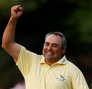

2009 Masters Golf Pool
April 6 - 12, 2009Welcome to my 5th and, so far, annual Masters golf pool. This pool I'm keeping things simple and generally maintaining the status quo. I had hoped to add a few more gizmos to the site, but timing is a bit of an issue these days. That said, a few updates: I've added a few new rules (nothing really of import, mainly housekeeping), and a few pics of the boys. Looking forward to the tourney! Spring is here (hopefully); Tiger is back; Mike is playing decent; and I've got a new TV! Enjoy this year's Masters and the pool. Fore!
Congrats
to
Angel Cabrera 2009
Masters Champion!
Congrats to Steve Siuta on his first pool victory!
Congrats to Steve Siuta on his first pool victory!

Angel Cabrera 2009 Masters Champ